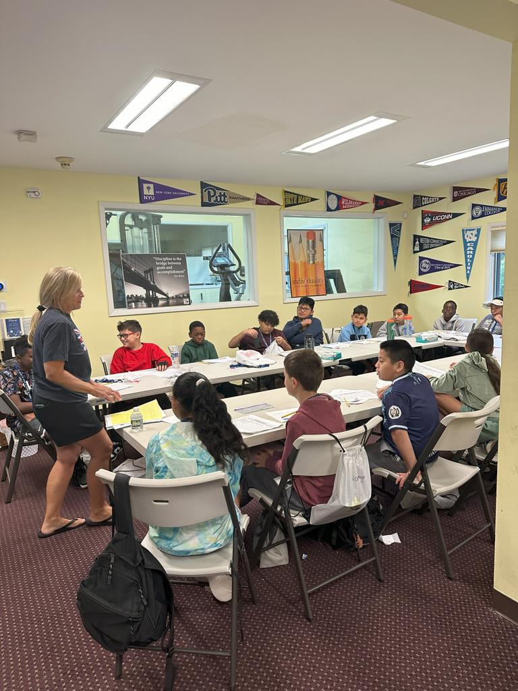

Students get help that fits
Grades 4 to 10, generally two one hour sessions each week.
One on one math and science tutoring for grades 4 to 10, subsidized for the families who need it most.
Two sessions a week, in person or online

Our mission
Every student deserves someone in their corner.
250+
enrolled students in lower Fairfield County
99%
parent satisfaction
81.6%
improved confidence
90%
eligible for discounted services
Beyond Limits program data, November 2025
The gap is measurable
39
points lower
Grade 8 mathematics, 2024
In 2024, students in Connecticut who were identified as economically disadvantaged scored, on average, that far below non-economically disadvantaged students in Grade 8 mathematics.
Beyond Limits exists to close that distance: one student, two sessions a week, for as long as it takes.
Peer powered learning: paid, trained tutors a few years ahead of the students they teach.
Grades 4 to 10, generally two one hour sessions each week.
High school juniors, seniors and college students, paid a stipend per session.
Tutoring rooms, Chromebooks, a family lounge and a kitchen on Long Ridge Road.

Subsidized one on one tutoring in math and science, plus enrichment, mentoring and academic advocacy for students across lower Fairfield County.
Explore Beyond Limits
AAU teams, a winter developmental league and a summer league, run on the principle that basketball is a privilege. Nearly 100 former players have gone on to college as basketball student athletes.
Explore Peace BasketballShe’s loving it! She loves the tutors, they have a lot of patience with her and they explain everything to her level in a way that she can understand it... Beyond Limits has been great to my family and I’m sure it’s been helping other kids too.
My experience in the program helped me to go in the right direction...and I know I’m going to be successful because of the help I got.
Sponsorships start at $500, which funds tutoring for one student for three months, and run to a $20,000 Center Sponsorship with naming rights to our tutoring center on Long Ridge Road.
Tell us about your student and we will open the right next step for you, in English or Español.
Takes about four minutes. No account needed.